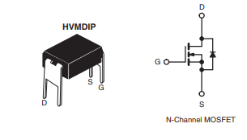

Simple example of Trinket M0 controlling a motor with a power MOSFET. The trinket M0 digital output can only source 7 mA. The motot in this example has a stall current of 500 mA so the trinket M0 can not drive the motor directly.
The MOSFET is used in much the same way as in https://danpeirce.github.io/remote-actuator.html#schematic-of-circuit exceot the gate circuit is replaced with a Trinket M0 and D2 is not required.

see https://danpeirce.github.io/2017/testTrinketM0/testing.html